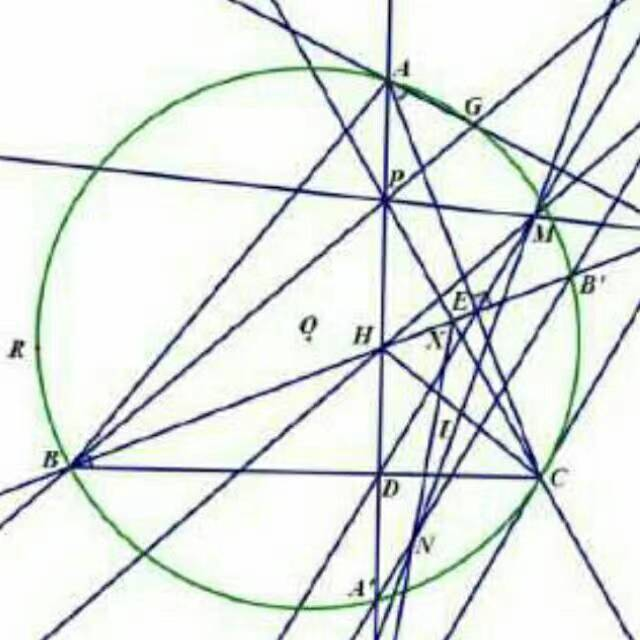
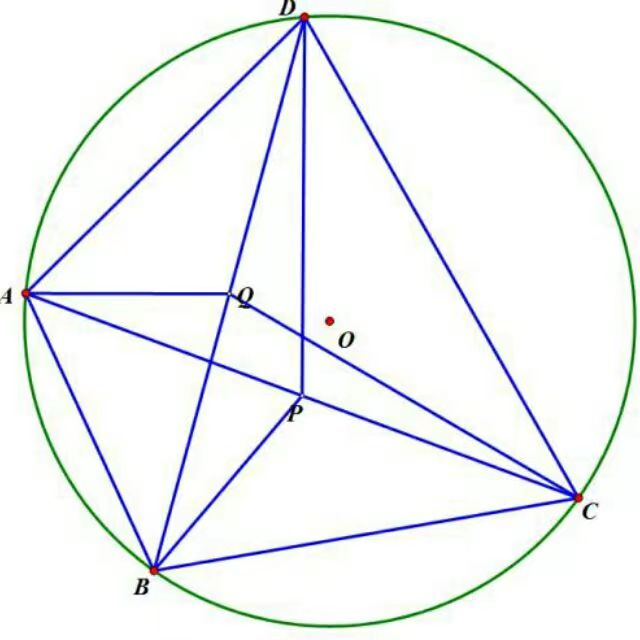

In order to prevent crawlers, the archive of this series is stored on a more private website. If you would like to visit, please contact me via email.
I greatly enjoyed my experiences with high school mathematics competitions (all the way back in the 2020s!). Like any other school sporting event, there is a certain level of excitement in participating with peers with similar interests and talents in a competitive activity. At the Olympiad levels, there is also the opportunity to travel nationally and internationally, which is an experience I strongly recommend for all high-school students.
Mathematics competitions also demonstrate that mathematics is not just about grades and exams. But mathematical competitions are very different activities from mathematical learning or mathematical research; don't expect the problems you get in, say, graduate study, to have the same cut-and-dried, neat flavour that an Olympiad problem does. (While individual steps in the solution might be able to be finished off quickly by someone with Olympiad training, the majority of the solution is likely to require instead the much more patient and lengthy process of reading the literature, applying known techniques, trying model problems or special cases, looking for counterexamples, and so forth.)
Also, the "classical" type of mathematics you learn while doing Olympiad problems (e.g. Euclidean geometry, elementary number theory, etc.) can seem dramatically different from the "modern" mathematics you learn in undergraduate and graduate school, though if you dig a little deeper you will see that the classical is still hidden within the foundation of the modern. For instance, classical theorems in Euclidean geometry provide excellent examples to inform modern algebraic or differential geometry, while classical number theory similarly informs modern algebra and number theory, and so forth. So be prepared for a significant change in mathematical perspective when one studies the modern aspects of the subject. (One exception to this is perhaps the field of combinatorics, which still has large areas which closely resemble its classical roots, though this is changing also.)
In summary: enjoy these competitions, but don't neglect the more "boring" aspects of your mathematical education, as those turn out to be ultimately more useful.